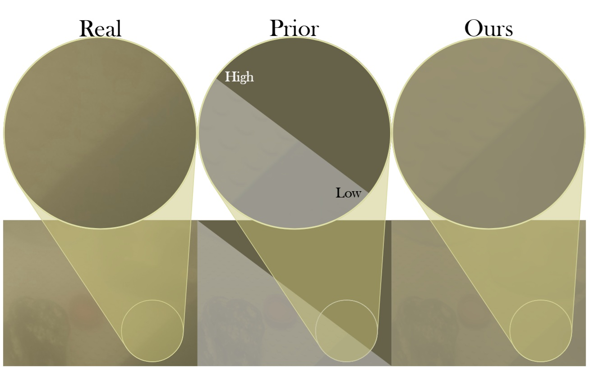
Sea-ing Through Scattered Rays: Revisiting the Image Formation Model for Realistic Underwater Image Generation
Vasiliki Ismiroglou, Malte Pedersen, Stefan H. Bengtson, Andreas Aakerberg, Thomas B. Moeslund ICCV Joint Workshop on Marine Vision, 2025
Vasiliki Ismiroglou, Malte Pedersen, Stefan H. Bengtson, Andreas Aakerberg, Thomas B. Moeslund ICCV Joint Workshop on Marine Vision, 2025
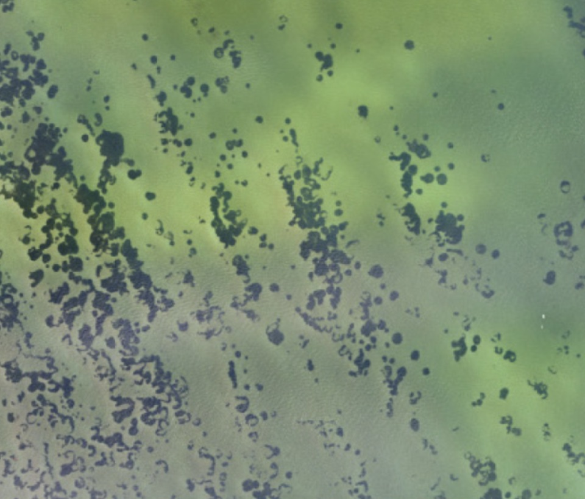
Eye in the Sky for Sub-Tidal Seagrass Mapping: Leveraging Unsupervised Domain Adaptation with SegFormer for Multi-Source and Multi-Resolution Aerial Imagery
Satish Pawar, Aris Thomasberger, Stefan Hein Bengtson, Malte Pedersen, Karen Timmermann Remote Sensing , 2025
Satish Pawar, Aris Thomasberger, Stefan Hein Bengtson, Malte Pedersen, Karen Timmermann Remote Sensing , 2025
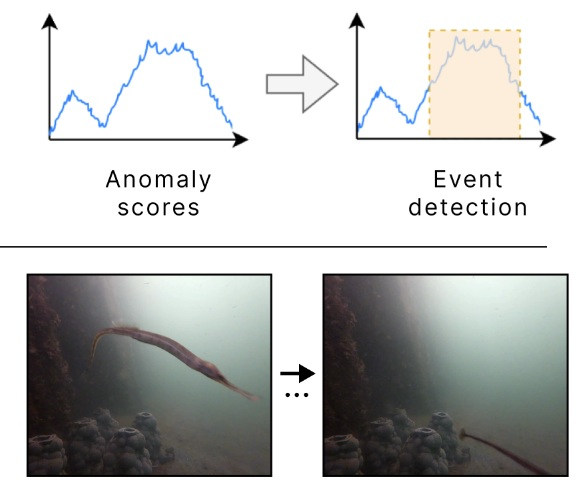
Uncovering Anomalous Events for Marine Environmental Monitoring via Visual Anomaly Detection
Laura Weihl, Stefan Hein Bengtson, Nejc Novak, Malte Pedersen ICCV Joint Workshop on Marine Vision, 2025
Laura Weihl, Stefan Hein Bengtson, Nejc Novak, Malte Pedersen ICCV Joint Workshop on Marine Vision, 2025
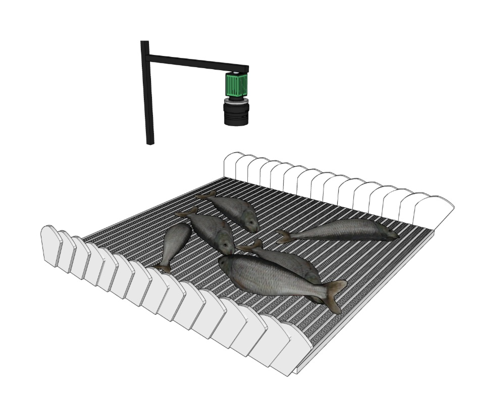
AutoFish: Dataset and Benchmark for Fine-grained Analysis of Fish
Stefan H. Bengtson, Daniel Lehotský, Vasiliki Ismiroglou, Niels Madsen, Thomas B. Moeslund, Malte Pedersen WACV Workshop on Maritime Computer Vision , 2025
Stefan H. Bengtson, Daniel Lehotský, Vasiliki Ismiroglou, Niels Madsen, Thomas B. Moeslund, Malte Pedersen WACV Workshop on Maritime Computer Vision , 2025
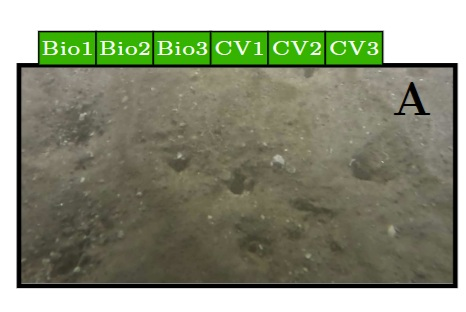
Underwater Uncertainty: A Multi-annotator Image Dataset for Benthic Habitat Classification
Galadrielle Humblot-Renaux, Anders S. Johansen, Jonathan E. Schmidt, Amanda F. Irlind, Niels Madsen, Thomas B. Moeslund, Malte Pedersen ECCV Computer Vision for Ecology Workshop, 2024
Galadrielle Humblot-Renaux, Anders S. Johansen, Jonathan E. Schmidt, Amanda F. Irlind, Niels Madsen, Thomas B. Moeslund, Malte Pedersen ECCV Computer Vision for Ecology Workshop, 2024
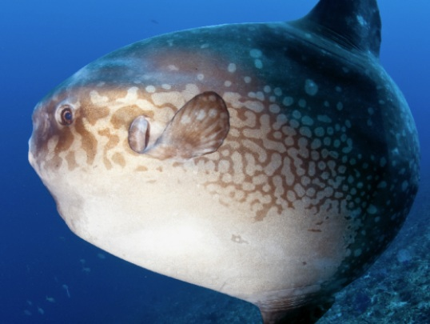
Finding Nemo’s Giant Cousin: Keypoint Matching for Robust Re-identification of Giant Sunfish
Malte Pedersen, Marianne Nyegaard, Thomas B. Moeslund JMSE , 2023
Malte Pedersen, Marianne Nyegaard, Thomas B. Moeslund JMSE , 2023
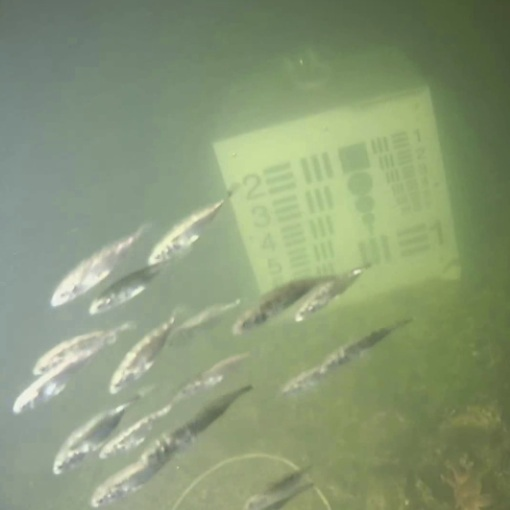
BrackishMOT: The Brackish Multi-object Tracking Dataset
Malte Pedersen, Daniel Lehotský, Ivan Nikolov, Thomas B. Moeslund SCIA , 2023
Malte Pedersen, Daniel Lehotský, Ivan Nikolov, Thomas B. Moeslund SCIA , 2023

MOTCOM: The Multi-Object Tracking Dataset Complexity Metric
Malte Pedersen, Joakim B. Haurum, Patrick Dendorfer, Thomas B. Moeslund ECCV , 2022
Malte Pedersen, Joakim B. Haurum, Patrick Dendorfer, Thomas B. Moeslund ECCV , 2022
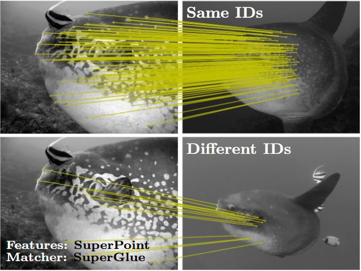
Re-Identification of Giant Sunfish using Keypoint Matching
Malte Pedersen, Joakim Bruslund Haurum, Thomas B. Moeslund, Marianne Nyegaard
NLDL, 2022
Malte Pedersen, Joakim Bruslund Haurum, Thomas B. Moeslund, Marianne Nyegaard
NLDL, 2022

Water Level Estimation in Sewer Pipes using Deep Convolutional Neural Networks
Joakim Bruslund Haurum, Chris H. Bahnsen, Malte Pedersen, Thomas B. Moeslund
Water, 2020
Joakim Bruslund Haurum, Chris H. Bahnsen, Malte Pedersen, Thomas B. Moeslund
Water, 2020

3D-ZeF: A 3D Zebrafish Tracking Benchmark Dataset
Malte Pedersen, Joakim B. Haurum, Stefan H. Bengtson, Thomas B. Moeslund CVPR , 2020
Malte Pedersen, Joakim B. Haurum, Stefan H. Bengtson, Thomas B. Moeslund CVPR , 2020
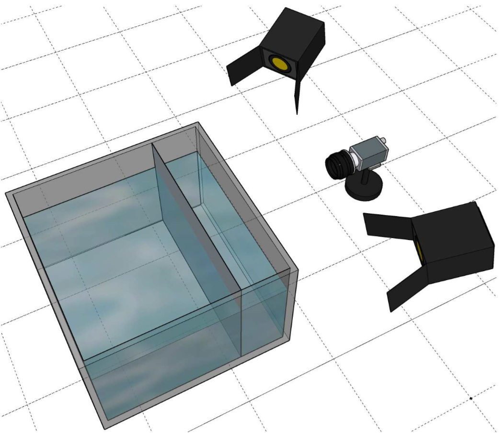
Re-identification of Zebrafish using Metric Learning
Joakim B. Haurum, Anastasija Karpova, Malte Pedersen , Stefan H. Bengtson, Thomas B. Moeslund WACV Workshop on Deep Learning Methods and Applications for Animal Re-Identification, 2020
Joakim B. Haurum, Anastasija Karpova, Malte Pedersen , Stefan H. Bengtson, Thomas B. Moeslund WACV Workshop on Deep Learning Methods and Applications for Animal Re-Identification, 2020
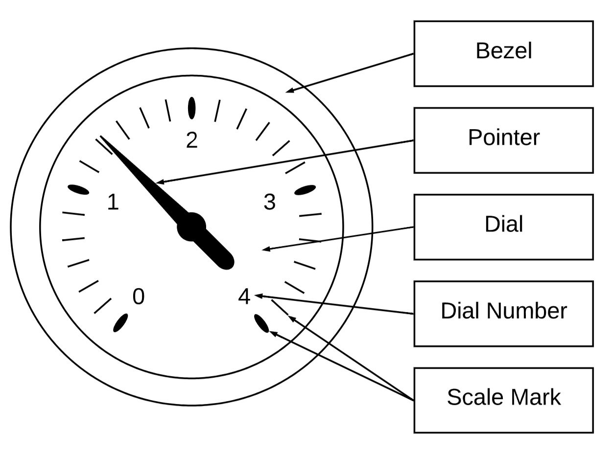
Reading Circular Analogue Gauges Using Digital Image Processing
Jakob S. Lauridsen, Julius A. G. Graasmé, Malte Pedersen, David G. Jensen, Søren Holm, Thomas B. Moeslund
VISAPP, 2019
Jakob S. Lauridsen, Julius A. G. Graasmé, Malte Pedersen, David G. Jensen, Søren Holm, Thomas B. Moeslund
VISAPP, 2019

Detection of Marine Animals in a New Underwater Dataset with Varying Visibility
Malte Pedersen, Joakim B. Haurum, Rikke Gade, Thomas B. Moeslund, Niels Madsen
CVPR Automated Analysis of Marine Video for Environmental Monitoring Workshop, 2019
Malte Pedersen, Joakim B. Haurum, Rikke Gade, Thomas B. Moeslund, Niels Madsen
CVPR Automated Analysis of Marine Video for Environmental Monitoring Workshop, 2019
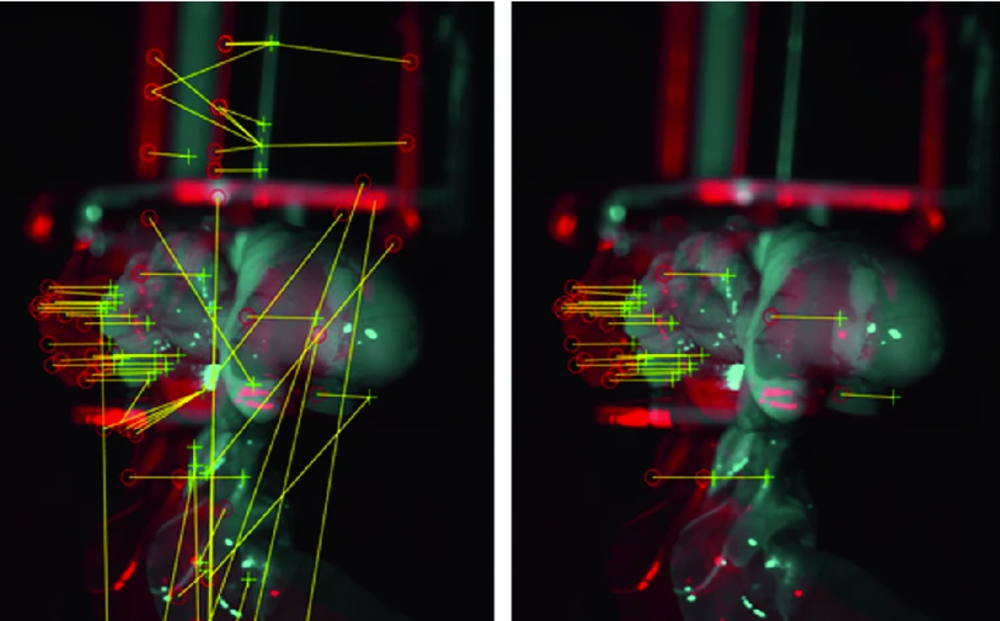
Reaching Behind Specular Highlights by Registration of Two Images of Broiler Viscera
Anders Jørgensen, Malte Pedersen, Rikke Gade, Jens Fagertun, Thomas B. Moeslund
ACCV Workshop , 2018
Anders Jørgensen, Malte Pedersen, Rikke Gade, Jens Fagertun, Thomas B. Moeslund
ACCV Workshop , 2018
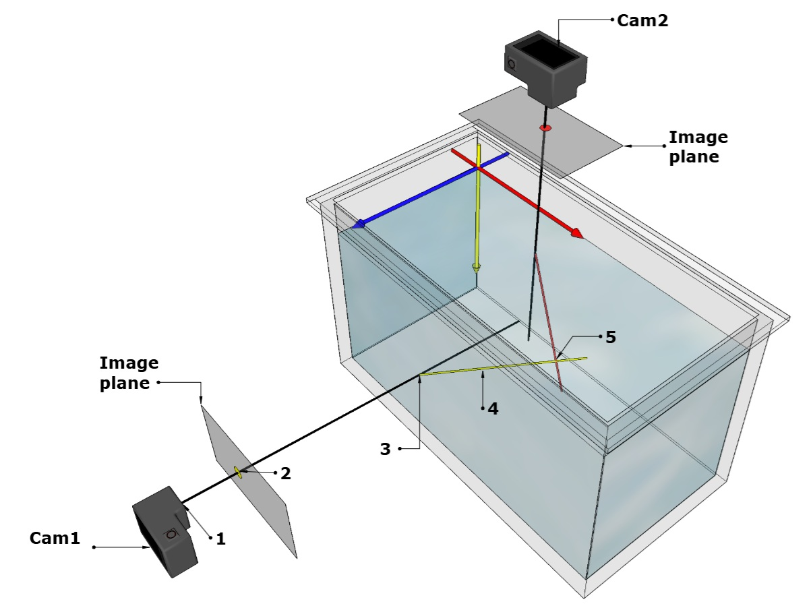
Camera Calibration for Underwater 3D Reconstruction Based on Ray Tracing Using Snell's Law
Malte Pedersen, Stefan Bengtson, Rikke Gade, Niels Madsen, Thomas B. Moeslund
CVPR Automated Analysis of Marine Video for Environmental Monitoring Workshop, 2018
Malte Pedersen, Stefan Bengtson, Rikke Gade, Niels Madsen, Thomas B. Moeslund
CVPR Automated Analysis of Marine Video for Environmental Monitoring Workshop, 2018
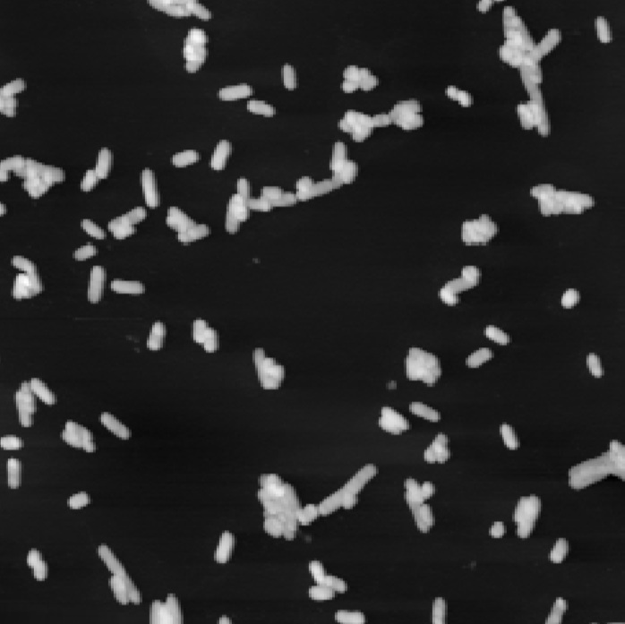
Stitching Grid-Wise Atomic Force Microscope Images
Mathias Vestergaard, Stefan Bengtson, Malte Pedersen, Christian Rankl, Thomas B. Moeslund
VISAPP, 2016
Mathias Vestergaard, Stefan Bengtson, Malte Pedersen, Christian Rankl, Thomas B. Moeslund
VISAPP, 2016